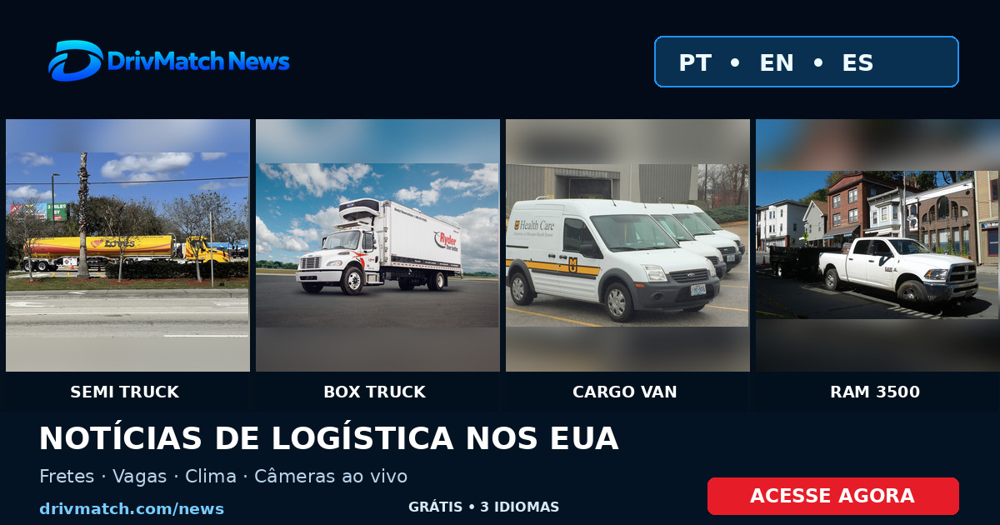

Notícias de transporte e logística dos EUA em 3 idiomas
Acessar DrivMatch News
Photographs: Eugene Peretz (CC BY-SA 2.0), Winnebaggo (CC0), Ford Transit uploader (CC BY-SA 4.0), RAM 3500 photographer (see source and license). Adapted/cropped for this promotional graphic. Attribution and licenses.